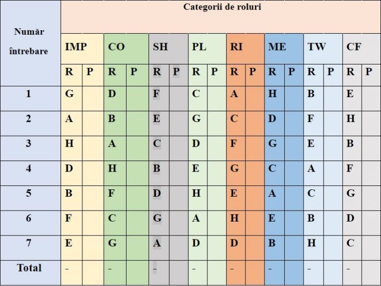
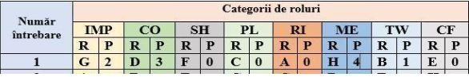
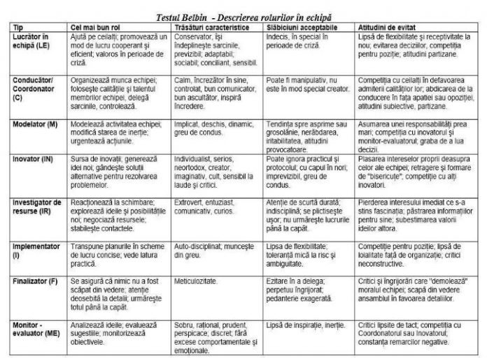
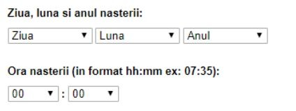

Data publicării: 10.09.2018
Autor articol: Mircea Vaida
1. Gruparea echipelor de lucru dupa modelul Belbin
1.1 Introducere in testul Belbin
Teoria Rolurilor de Echipă Belbin reprezintă rezultatul a peste 9 ani de cercetări realizate de către Dr. Meredith Belbin şi echipa sa în domeniul comportamentului uman şi contribuţiei la locul de muncă. Rezultatul acestor cercetări a fost publicat pentru prima oară în anul 1981, iar teoria rolurilor de echipă a fost imediat recunoscută şi acceptată de mediul academic şi de afaceri ca reprezentând un instrument foarte important de management al resurselor umane.
Rolul de Echipă este definit de Meredith Belbin ca “tendinţa specifică unei persoane de a se comporta, contribui şi interacţiona cu cei din jur”. Belbin şi echipa sa au identificat nouă astfel de roluri reprezentând combinaţii unice de aspecte comportamentale pozitive şi negative.
În practică, o persoană este capabilă să abordeze două, trei sau chiar patru roluri preferate, principale. Aceeaşi persoană poate deţine câteva roluri secundare, pe care să le abordeze atunci când situaţia o cere şi un număr de roluri pentru care nu este potrivită, pe care de fapt trebuie să le evite. Distribuţia acestor roluri derivă din profilul personal ce se realizează prin captarea prin mijloace specifice a percepţiei proprii şi a percepţiei observatorilor (colegi, manager, subordonaţi, colaboratori, clienţi, etc.) asupra comportamentului persoanei respective.
Cercetatorul si teoreticianul britanic Meredith Belbin a devenit faimos pentru modelul rolurilor in echipa dezvoltat la sfarsitul anilor 1970. Belbin a demonstrat ca echipele echilibrate, formate din persoane cu aptitudini diferite, inregistreaza performante superioare celor ale echipelor dezechilibrate. In prezent, modelul sau este utilizat de mai mult de 40% din firmele de succes din Marea Britanie, precum si de alte mii de companii la nivel international.
Descrierea acestui model si a urmatoarelor se bazeaza pe un proiect practic dezvoltat la UTC-N, fac. ETTI, anul 2017-18 folosind referintele de la [25] la [33].
1.2 Descrierea Rolurilor de Echipă Belbin
Categorii de roluri:
- roluri orientate către acţiune: Shaper, Implementer, Completer Finisher
- roluri orientate către relaţii: Coordinator, Teamworker, Resource Investigator
- roluri cerebrale: Plant, Monitor Evaluator, Specialist
PLANT (PL) : PL sunt inovatori şi inventatori, într-un cuvânt foarte creativi. Ei furnizează ideile care stau la baza dezvoltărilor importante. De obicei ei preferă să acţioneze singuri, la o oarecare distanţă de ceilalţi membri ai echipei, utilizându-şi imaginaţia şi acţionînd deseori în mod neobişnuit. Ei tind să fie introvertiţi şi reacţionează puternic la critici şi laude. Unele dintre ideile lor pot fi radicale şi de neaplicat în practică. PL sunt independenţi, inteligenţi şi originali. Se poate întâmpla ca PL să nu comunice foarte bine cu persoanele care nu se află pe aceeaşi “lungime de undă” cu ei.
RESOURCE INVESTIGATOR (RI) : RI sunt adesea entuziaşti şi se remarcă ca extrovertiţi. Sunt foarte pricepuţi să comunice cu oamenii atât din interiorul companiei cât şi din afară. Sunt negociatori nativi, înclinaţi să exploreze noi oportunităţi şi să dezvolte contacte. Deşi nu sunt o mare sursă de idei originale RI sunt foarte buni la a culege ideile altora şi a le dezvolta. Aşa după cum spune şi numele, RI au aptitudinea de a afla ceea ce este disponibil şi ceea ce se poate folosi. RI sunt bine primiţi de către cei din jurul lor datorită naturii lor deschise. RI sunt persoane relaxate cu un simţ al curiozităţii foarte dezvoltat şi cu o capacitate de a vedea oportunităţi în orice lucru nou. Cu toate acestea entuziasmul lor scade dacă nu este stimulat de cei din jur.
COORDINATOR (CO) : CO au drept caracteristică distinctivă capacitatea de a-i face pe ceilalţi să lucreze către atingerea unor ţeluri comune. Maturi, încrezători şi de încredere ei sunt gata să delege. În relaţiile interpersonale ei sesizează rapid talentele individuale şi le folosesc în scopul atingerii obiectivelor grupului. Chiar dacă CO nu sunt neapărat cei mai inteligenţi membri ai echipei, ei au un orizont larg de vederi şi în general impun respect.
SHAPER (SH): SH sunt persoane foarte motivate, caracterizate de multă energie nervoasă şi de nevoia imperioasă de a atinge obiectivele propuse. De obicei ei sunt foarte extrovertiţi şi foarte hotărâţi. Le place să provoace pe cei din jur şi sunt preocupaţi în permanenţă să învingă. SH le place să conducă şi să-i determine pe ceilalţi să acţioneze. În momentul în care se află în faţa unui obstacol găsesc un mod alternativ de a trece peste el. Sunt foarte hotărâţi şi convingători în acelaşi timp. Au tendinţa de a reacţiona emoţional foarte puternic atunci când sunt frustraţi sau dezamăgiţi. SH au “pielea groasă”, sunt predispuşi să discute în contradictoriu şi s-ar putea să le lipsească înţelegerea aspectelor inter-relaţionale.
MONITOR EVALUATOR (ME): ME sunt persoane serioase, prudente, imune la entuziasm. Le trebuie mult timp pentru a lua decizii preferînd să gândească mult înainte. În mod obişnuit ei au foarte bune aptitudini mentale şi au capacitatea de a judeca atent şi de a lua toţi factorii în considerare. Un bun ME se înşeală foarte rar.
IMPLEMENTER (IMP) : IMP au simţ practic foarte dezvoltat, se autocontrolează foarte bine şi sunt disciplinaţi. Muncesc din greu şi abordează problemele într-o manieră sistematică. În general IMP este o persoană loială companiei pentru care lucrează şi este mai puţin interesată de urmărirea propriilor interese. Cu toate acestea IMP pot să le lipsească spontaneitatea şi să fie inflexibili.
COMPLETER-FINISHER (CF): CF au o mare capacitate de a finaliza activităţile şi acordă o mare atenţie detaliilor. Ei nu încep ceva ce nu pot duce la bun sfârşit. Motivaţia lor provine dintr-o nelinişte interioară deşi din exterior ei par netulburaţi. În mod obişnuit ei sunt introvertiţi şi nu necesită stimuli externi sau încurajări. CF pot fi intoleranţi cu cei ce sunt nepăsători. Nu sunt dispuşi să delege, preferînd să facă ei înşişi ceea ce trebuie făcut.
TEAM WORKER (TW): TW sunt cei care susţin echipa cel mai mult. Ei sunt temperaţi, sociabili şi preocupaţi de ceilalţi. Au o capacitate foarte mare de a fi flexibili şi de a se adapta unei diversităţi de caractere şi situaţii. TW sunt receptivi şi diplomaţi. Sunt buni ascultători şi de obicei sunt populari în cadrul grupului. Acţionează cu delicateţe, dar pot să fie indecişi în situaţii critice.
SPECIALIST (SP) : SP sunt indivizi care se dedică muncii lor, care sunt mândri de cunoştinţele lor de specialitate şi de acumularea de noi aptitudini tehnice. Prioritatea lor este de a menţine standardele profesionale şi de a promova şi apăra propriul domeniu de activitate. Cu toate că se arată foarte mândri de specialitatea lor, nu sunt foarte interesați de alte domenii. De fapt, SP devin experți prin concentrarea mai degrabă pe un domeniu îngust. Există puține persoane care au fie dorința fie aptitudinile de a deveni un adevărat SP.
1.3. Chestionarul Belbin
A. Tabel de gestionare a răspunsurilor:

R= raspunsul de la fiecare intrebare P= punctajul acordat fiecarui raspuns
B. Reguli
Chestionarul Belbin conține 7 secțiuni (numerotate de la 1 la 7). Fiecare secțiune are 8 afirmații (de la A la H) , care descriu 8 atitudini sau reacții fata de situația descrisa in respectiva secțiune.
Pentru a completa fiecare secțiune, se aleg propozițiile care caracterizează cel mai bine persoana care îl completează. Apoi se repartizează un total de 10 puncte pentru propozițiile alese.
Exemplu: una dintre propozitii vă caracterizează foarte bine, iar cealaltă se aplică doar uneori, în acest caz puteţi acorda primei propoziţii şapte puncte iar restul de trei puncte celei de-a doua. În unele cazuri puteţi decide că sunt două propoziţii care vi se potrivesc în mod egal – acordaţi cinci puncte fiecăreia, etc.
Trebuie să alocaţi toate cele 10 puncte în fiecare secţiune.
C. Secțiuni și afirmații
1. Cred ca pot contribui intr-o echipa astfel:
A. Pot observa si valorifica noi oportunități
B. Pot lucra bine cu diversi oameni
C. Producerea ideilor este una din abilitatile mele naturale
D. Capacitatea mea este sa pot sa încurajez oamenii sa acționeze ori de cate ori eu simt ca au ceva de valoare de oferit grupului
E. Capacitatea mea de a merge pana la capat are mult de a face cu eficienta personala
F. Sunt pregatit sa fac fata unei nepopularitati temporare daca rezultatele merita
G. Pot de obicei sa simt ce este realist si ce va functiona
H. Pot oferi o analiza logica pentru optiunile alternative fara a fi părtinitor
Exemplu acordare punctaj si completare tabel:
A-0;B-1;C-0;D-3;E-0;F-0;G-2;H-4

2. Daca as avea un posibil dezavantaj pentru lucrul in echipa, acela ar fi ca:
A. Nu ma simt bine decât daca întâlnirile sunt bine structurate si controlate si in general bine orientate
B. Am tendinta de a fi prea generos catre cei care au un punct de vedere corect care nu a fost apreciat corespunzator
C. Am tendinta de a vorbi prea mult odata ce grupul ajunge la discutii despre noi idei
D. Perspectiva mea obiectiva face dificil sa ma alatur cu entuziasm colegilor mei
E. Uneori sunt vazut ca fiind autoritar daca exista un lucru care trebuie facut
F. Imi este greu sa conduc din fata , probabil pentru ca sunt foarte receptiv la atmosfera de grup
G. Sunt predispus sa ma pierd in idei care imi apar si sa pierd desfasurarea evenimentelor
H. Colegii mei au tendinta sa ma vada ca ingrijorandu-ma degeaba pentru detalii si pentru posibilitatea ca lucrurile sa mearga prost
3. Cand participi intr-un proiect cu alte persoane:
A. Reusesc sa influentez oamenii fara a-i constrange
B. Atentia mea previne multe greseli
C. Sunt gata sa fac presiuni pentru a fi sigur ca intalnirea nu devine o pierdere de timp si ca nu pierde din vedere obiectivul
D. Se poate conta pe mine sa contribui cu ceva original
E. Sunt intotdeauna pregatit sa sustin o sugestie buna in interesul tuturor
F. Sunt doritor sau caut cele mai noi idei
G. Consider ca pot ajuta sa se ia deciziile corecte prin capacitatea mea de analiza
H. Se poate pune baza pe mine pentru organizarea lucrurilor esentiale
4. Abordarea mea caracteristica a lucrului in echipa este:
A. Ma intereseaza cunoasterea mai buna a colegilor mei
B. Nu sunt reticent in a contesta ideilor alta sau in a ma afla in minoritate
C. De obicei gasesc o modalitate de a respinge afirmatiile incorecte
D. Cred ca am talentul de a face lucrurile sa mearga odata ce un plan a fost pus in aplicare
E. Am tendinta de a evita ceea ce este evident si de a scoate la suprafata ceea ce este neasteptat
F. Aduc un strop de perfectionism in orice lucru pe care il fac
G. Sunt pregatit sa folosesc persoane din afara grupului
H. Sunt interesat in toate punctele de vedere , dar nu ezit cand este vorba de luarea unei decizii
5. Un proiect imi aduce satisfactie pentru ca:
A. Imi face placere sa analizez situatiile si sa iau in calcul toate variantele
B. Sunt interesat in gasirea celei mai practice solutii pentru o anumita problema
C. Imi place sa simt ca intretin relatii bune cu colegii
D. Pot avea o puternica influenta asupra deciziilor luate
E. Pot intalni oameni care pot avea ceva nou de oferit
F. Pot sa fac oamenii sa fie de acord asupra unei modalitati de a actiona
G. Ma simt bine daca pot acorda unei sarcini intreaga mea atentie
H. Imi place sa gasesc un domeniu care imi stimuleaza imaginatia
6. Daca primesc deodata o insarcinare dificila cu putin timp la dispozitie si oameni dificili :
A. Am tendinta sa ma retrag intr-un corner pentru a gasi o solutie de iesire din impas
B. As fi gata sa lucrez cu persoana care imi arata cea mai buna abordare
C. As gasi o modalitatea de a reduce marimea insarcinarii stabilind cum ar putea fiecare sa contribuie cel mai bine
D. Simtul meu natural al timpului ne-ar ajuta sa respectam programul
E. Consider ca as ramane calm si mi-as pastra capacitatea de a gandi corect
F. As pastra aceleasi obiective in ciuda presiunilor
G. As fi pregatit sa imi asum responsabilitatea conducerii daca as simti ca grupul nu progreseaza
H. As pune bazele unor discutii care sa stimuleze aparitia unor noi idei si punerea pe picioare a proiectului
7. Privind probleme care pot apare cand lucrez in grup :
A. Pot sa imi exprim nerabdarea fata de cei nu isi realizeaza obiectivele
B. Altii ma pot critica pentru ca sunt prea analitic si prea putin intuitiv
C. Dorinta mea de a ma asigura ca totul este facut bine poate intarzia desfasurarea evenimentelor
D. Am tendinta sa ma plictisesc usor so sa ma bazez pe unul sau doi membri sa sa stimuleze pentru a ma entuziasma
E. Imi vine greu sa pornesc daca obiectivele nu sunt clare
F. Uneori nu reusesc sa explic si sa clarific probleme complexe care imi vin in minte
G. Sunt constient ca cer de la altii lucruri pe care eu nu le pot face
H. Ezit sa imi impun punctul de vedere atunci cand dau de o rezistenta reala
D. Interpretarea punctajelor totale:
Punctajul maxim va indica cat de bine poate persoana in cauza sa se faca remarcata in cadrul unei echipe.
Următorul punctaj mare indica rolul spre care se poate îndrepta persoana in cazul in care pentru vreun motiv sau altul exista o cerința mai mica in cadrul echipei de a ocupa rolul cu cel mai mare punctaj obținut de persoana respectiva.
1.4 Concluzii metoda Belbin
Analizând comportamentul membrilor si performanta echipei, s-a constatat ca acest concept al rolurilor in echipa poate duce la îmbunătățiri considerabile:
- In cazul realizărilor inferioare este nevoie de un bun coordonator sau un finalizator.
- Pentru conflicte este necesar un coechipier sau un coordonator puternic.
- Performantele mediocre pot fi îmbunătățite cu ajutorul unui investigator de resurse, inovator sau formator.
- Echipele predispuse erorilor au nevoie de un monitor – evaluator.
- Roluri diferite sunt utile in circumstanțe diferite:
- Membrii noi in echipa au nevoie de un bun formator.
- Situațiile competitive au nevoie de un inovator cu idei bune.
- In situațiile de risc este nevoie de un bun evaluator.
Prin urmare, analiza echipei trebuie sa includă atât rolurile membrilor, cat si aptitudinile necesare in echipa.

In acest document: LE=TW; C=CO; M=SH; IN=PL; IR=RI; I=IMP; F=CF; ME=ME
2. Gruparea echipelor de lucru bazat pe testul Quest
Societatea britanică de psihologie (British Psychological Society) definește testul psihometric ca fiind ”instrumentul conceput pentru a evalua cantitativ unul sau mai multe atribute psihologice.” Cele două tipuri principale de teste psihometrice folosite sunt chestionarele de personalitate și testele de aptitudini.
Eneagrama este un instrument psihologic performant cu originea în înțelepciunea antică ce descrie nouă stiluri sau tipuri de personalitate, de fapt nouă stiluri diferite de a ne trăi viața.
Testul rapid al Eneagramei, numit TEST-ul QUEST (descris de Don Ricardo Riso si Russ Hudson)
Grupul I
A. Am tendința să fiu destul de independent și îmi place să mă afirm. Am simțit că este mai bine să iau viața în piept. Mi-am stabilit scopurile, îmi place să mă implic și să fac ca lucrurile să-mi iasă. Nu-mi place să stau deoparte – vreau să realizez lucruri mari și să am impact asupra celor din jur. Nu caut neapărat să mă confrunt cu alții, dar nu las oamenii în nici-un caz să mă dea la o parte. Cea mai mare parte din timp știu ce vreau și fac totul pentru asta. Am tendința să muncesc din greu dar și să mă distrez.
B. Am tendința să fiu tăcut și îmi place să fiu singur. Nu obișnuiesc să atrag atenția asupra mea și nu obișnuiesc în general să mă afirm. Nu mă simt bine să preiau conducerea sau să fiu așa competitiv ca ceilalți. Mulți pot spune despre mine că sunt un visător, o mare parte din trăirile mele se petrec în imaginația mea. Mă simt bine dacă nu este nevoie să fiu tot timpul activ.
C. Am tendința să fiu foarte responsabil și devotat. Mă simt groaznic dacă nu-mi țin promisiunile și dacă nu fac ceea ce ceilalți asteaptă de la mine. Vreau ca oamenii să știe că sunt aici pentru ei și ca voi face tot ceea ce cred că este mai bine. Chiar dacă ei nu știu, de multe ori am făcut sacrificii mari pentru ceilalți. Deseori nu am grijă de mine. Fac ceea ce trebuie făcut și mă relaxez (sau fac ceea îmi place cu adevărat) numai dacă mai rămâne timp.
Grupul II
X. Sunt o persoană care are de obicei o imagine pozitivă despre viață și simte că lucrurile se vor sfârși cu bine. Pot să găsesc cu ușurință ceva care să-mi trezească entuziasmul și găsesc întotdeauna ceva de făcut. Îmi place să fiu împreună cu alții și să îi ajut să fie fericiți. Mă bucur să-mi împărtășesc starea mea bună cu cei din jur. Nu mă simt întotdeauna grozav dar încerc să nu arăt asta nimanui! Amân de multe ori să-mi rezolv problemele.
Y. Sunt o persoană cu sentimente puternice, cei mai mulți oameni pot spune când nu-mi convine ceva. Pot fi precaut cu ceilalți, dar sunt mult mai sensibil decît las să se vadă. Vreau să știu pe cine mă pot baza și prefer să-mi definesc clar relațiile cu ceilalți. Când sunt supărat aș vrea ca cei din jur să–mi răspundă și să fie alături de mine. Stiu care sunt regulile și nu-mi place ca oamenii să-mi spună ce să fac. Vreau să hotărăsc eu însumi.
Z. Tind să fiu logic și mă stăpânesc bine – dar nu mă simt in largul meu să am de-a face cu sentimente și emoții. Sunt eficient – chiar perfecșionist – și prefer să lucrez singur. Când sunt probleme sau conflicte personale, încerc să nu mă implic emoțional în acea situație. Unii spun că sunt prea rece și detașat, dar nu vreau ca emoțiile să mă distragă de la ce este cu adevărat important pentru mine. De obicei nu-mi manifest reacțiile chiar dacă ceilalți insistă.
Interpretarea testului
Punând împreună cele două litere selectate, se formează un cod alcătuit din 2 cifre. Pentru a afla cărui tip de personalitate aparținem confruntăm opțiunile noastre cu informațiile din grila de mai jos:
AX – 7 – Generalistă: Spontană, împlinită, impulsivă
AY – 8 – Conducătoare: Încrezătoare în sine, hotărâtă,dominatoare
AZ – 3 – Competitivă: Adaptabilă, ambițioasă, conștientă de imaginea sa
BX – 9 – Mediatoare: Receptivă, convingătoare, automulțumită
BY – 4 – Artistă: Intuitivă, estetă, egocentrică
BZ – 5 – Observatoare: Perceptivă, inventivă, detașată
CX – 2 – Altruistă: Generoasă, grijulie, posesivă
CY – 6 – Devotată: Atrăgătoare, responsabilă, defensivă
CZ – 1 – Perfecționistă: Rațională, principială, controlată.
Pentru fiecare tip de personalitate contează să:
Tipul 9 – să evite conflictele, să fie conciliant, să nu fie despărțit de ceea ce iubește.
Tipul 8 – să evite slăbiciunea, să fie puternic, să-și afirme autoritatea.
Tipul 7 – să evite suferința și izolarea, să aibă posibilitatea de a alege, să fie apreciat pentru bucuria sa de a trăi.
Tipul 6 – să evite devierea, trădarea, să fie pregătit pentru orice eventualitate, capabil sa supraviețuiască prin el însuși, să fie apreciat pentru cinstea sa.
Tipul 5 – să evite intruziunea și vidul interior, să știe, să fie util, să fie “la curent”.
Tipul 4 – să evite banalitatea, să fie aparte, să fie apreciat pentru ceea ce este, pentru că este diferit.
Tipul 3 – să evite eșecul, să reușească, să fie apreciat pentru ceea ce face, să fie stimat.
Tipul 2 – să evite respingerea, să evite recunoașterea propriilor nevoi, să iubească, să fie iubit, să fie apreciat pentru grija sa față de ceilalți.
Tipul 1 – să evite mania, să aibă dreptate, să fie apreciat pentru calitatea acțiunilor sale.
3. Gruparea echipelor de lucru bazat pe zodiacul European
Una din metodele alternative pentru ca persoanele să aibă o colaborare cât mai bună atunci când este vorba de muncă în echipă, o reprezintă compatibilitatea zodiilor și ascendenții acesteia. O bună colaborare sau înțelegere între doua persoane este în proporții mari dirijată de personalitatea ficarui individ în parte.
Zodiacul european este un mod de a reprezenta tipul de persoană în funcție de ziua, luna și anul nașterii.
Cele 12 zodii se împart astfel:
- BERBEC (21 martie – 20 aprilie)
- TAUR (21 aprilie – 21 mai)
- GEMENI (21 mai – 21 iunie)
- RAC (22 iunie – 22 iulie)
- LEU (23 iulie – 22 august)
- FECIOARĂ (23 august – 22 septembrie)
- BALANȚĂ (23 septembrie – 22 octombrie)
- SCORPION (23 octombrie – 21 noiembrie)
- SĂGETĂTOR (22 noiembrie – 21 decembrie)
- CAPRICORN (22 decembrie – 20 ianuarie)
- VĂRSĂTOR (21 ianuarie – 19 februarie)
- PEȘTI (20 februarie – 20 martie)
Ascendentul reprezintă semnul zodiacal care se află la est în momentul în care ne naștem, spre deosebire de zodie, care este o constelație ce corespunde unei anumite perioade din an. Astfel, avem nevoie de ora si minutele, pe lângă ziuă, lună și an, pentru a determina ascendenții zodiilor.
Pentru cei născuți în zodia Berbec, ascendentul este în:
- 5:23 – 6:23 – Berbec
- 6:23 – 7:52 – Taur
- 7:52 – 9:46 – Gemeni
- 9:46 – 12:13 – Rac
- 12:13 – 14:41 – Leu
- 14:41 – 17:18 – Fecioară
- 17:18 – 20:00 – Balanță
- 20:00 – 22:38 – Scorpion
- 22:38 – 1:08 – Săgetător
- 1:08 – 2:53 – Capricorn
- 2:53 – 4:17 – Vărsător
- 4:17 – 5:23 – Pești
Pentru cei născuți în zodia Taur, ascendentul este în:
- 3:20 – 4:20 – Berbec
- 4:20 – 5:49 – Taur
- 5:49 – 7:43– Gemeni
- 7:43 – 10:00 – Rac
- 10:00 – 12:38 – Leu
- 12:38 – 15:40 – Fecioară
- 15:40 – 17:53 – Balanță
- 17:53 – 20:35 – Scorpion
- 20:35 – 23:00 – Săgetător
- 23:00 – 0:50 – Capricorn
- 0:50 – 2:17 – Vărsător
- 2:17 – 3:20 – Pești
Pentru cei născuți în zodia Gemeni, ascendentul este în:
- 1:48 – 2:48 – Berbec
- 2:48 – 4:17 – Taur
- 4:17 – 6:11 – Gemeni
- 6:11 – 8:28 – Rac
- 8:28 – 11:03 – Leu
- 11:03 – 13:43 – Fecioară
- 13:43 – 16:25 – Balanță
- 16:25 – 19:03 – Scorpion
- 19:03 – 21:28 – Săgetător
- 21:28 – 23:18 – Capricorn
- 23:18 – 0:45 – Vărsător
- 0:45 – 1:48 – Pești
Pentru cei născuți în zodia Rac, ascendentul este în:
- 23:12 – 0:12– Berbec
- 0:12 – 1:41 – Taur
- 1:41 – 3:35 – Gemeni
- 3:35 – 5:52 – Rac
- 5:52 – 8:27 – Leu
- 8:27 – 11:07 – Fecioară
- 11:07 – 13:49– Balanță
- 13:49 – 16:27 – Scorpion
- 16:27 – 18:52 – Săgetător
- 18:52 – 20:40 – Capricorn
- 20:40 – 22:09 – Vărsător
- 22:09 – 23:12 – Pești
Pentru cei născuți în zodia Leu, ascendentul este în:
- 21:09 – 22:09 – Berbec
- 22:09 – 23:38 – Taur
- 23:38 – 1:32 – Gemeni
- 1:32 – 3:49 – Rac
- 3:49 – 6:42 – Leu
- 6:42 – 9:04 – Fecioară
- 9:04 – 11:42 – Balanță
- 11:42 – 14:24 – Scorpion
- 14.24 – 16.49 – Săgetător
- 16:49 – 17:39 – Capricorn
- 17:39 – 20:07 – Vărsător
- 20:07 – 21:09 – Pești
Pentru cei născuți în zodia Fecioară, ascendentul este în:
- 19:07 – 20:07 – Berbec
- 20:07 – 21:36 – Taur
- 21:36 – 23:30 – Gemeni
- 23:30 – 1:47 – Rac
- 1:47 – 4:22 – Leu
- 4:22 – 7:02 – Fecioară
- 7:02 – 9:44 – Balanță
- 9:44 – 12:22 – Scorpion
- 12:22 – 15:47 – Săgetător
- 5:47 – 16:37– Capricorn
- 16:37 – 18:04 – Vărsător
- 18:04 – 19:07– Pești
Pentru cei născuți în zodia Balanță, ascendentul este în:
- 17:05 – 18:05 – Berbec
- 18:05 – 19:34 – Taur
- 19:34 – 21:28 – Gemeni
- 21:28 – 23:35 – Rac
- 23:35 – 2:20 – Leu
- 2:20 – 5:00 – Fecioară
- 5:00 – 7:42 – Balanță
- 7:42 – 10:20 – Scorpion
- 10:20 – 12:35 – Săgetător
- 12:35 – 13:35 – Capricorn
- 13:35 – 16:02 – Vărsător
- 16:02 – 17:05 – Pești
Pentru cei născuți în zodia Scorpion, ascendentul este în:
- 15:07 – 16:07 – Berbec
- 16:07 – 17:36 – Taur
- 17:36 – 19:30 – Gemeni
- 19:30 – 21:47 – Rac
- 21:47 – 0:22 – Leu
- 0:22 – 3:02 – Fecioară
- 3:02 – 5:44 – Balanță
- 5:44 – 8:22 – Scorpion
- 8:22 – 10:47 – Săgetător
- 10:47 – 11:37 – Capricorn
- 11.37 – 14.02 – Vărsător
- 14:02 – 15:07 – Pești
Pentru cei născuți în zodia Săgetător, ascendentul este în:
- 14:08 – 15:37 – Taur
- 15:37 – 17:31 – Gemeni
- 17:31 – 19:48 – Rac
- 19:48 – 22:23 – Leu
- 22:23 – 1:03 – Fecioară
- 1:03 – 3:45 – Balanță
- 3:45 – 6:23 – Scorpion
- 6:23 – 8:48 – Săgetător
- 8:48 – 10:38 – Capricorn
- 10:38 – 12:05 – Vărsător
- 12:05 – 13:08 – Pești
Pentru cei născuți în zodia Capricorn, ascendentul este în:
- 11:13 – 12:13 – Berbec
- 12:13 – 13:42 – Taur
- 13:42 – 15:36 – Gemeni
- 15:36 – 17:53 – Rac
- 17:53 – 20:28 – Leu
- 20:28 – 23:08 – Fecioară
- 23:08 – 1:50 – Balanță
- 1:50 – 4:28 – Scorpion
- 4:28 – 6:53 – Săgetător
- 6:53 – 8:43 – Capricorn
- 8:43 – 10:10 – Vărsător
- 10:10 – 11:13 – Pești
Pentru cei născuți în zodia Vărsător, ascendentul este în:
- 9:19 – 10:19 – Berbec
- 10:19 – 11:48 – Taur
- 11:48 – 13:42 – Gemeni
- 13:42 – 15:59 – Rac
- 15:59 – 18:34 – Leu
- 18.34 – 21.14 – Fecioară
- 21:14 – 23:56 – Balanță
- 23:56 – 2:34 – Scorpion
- 2:34 – 4:59 – Săgetător
- 4:59 – 6:49 – Capricorn
- 6:49 – 8:16 – Vărsător
- 8:16 – 9:19 – Pești
Pentru cei născuți în zodia Pești, ascendentul este în:
- 7:20 – 8:20 – Berbec
- 8:20 – 9:49 – Taur
- 9:49 – 11:43 – Gemeni
- 11:43 – 14:00 – Rac
- 14:00 – 16:35 – Leu
- 16:35 – 19:15 – Fecioară
- 19:15 – 21:57 – Balanță
- 21:57 – 0:35 – Scorpion
- 0:35 – 3:00 – Săgetător
- 3:00 – 4:50 – Capricorn
- 4:50 – 6:17 – Vărsător
- 6:17 – 7:20 – Pești
Compatibilitatile intre zodii sunt reprezentate in 4 moduri diferite. Acestor moduri ii se vor atribui cifre, pentru a fi mai usor interpretate: Excelenta (3), foarte bună (2), bună (1), mai putin bună (0). Astfel putem spune urmatoarele:
Pentru BERBEC:
- Excelent: gemeni, leu, săgetător, vărsător
- Foarte bună: berbec, balanță
- Bună: taur, feciara, scorpion, pești
- Mai putin bună: rac, Capricorn
Pentru TAUR:
- Excelent: rac, fecioară, capricorn, pești
- Foarte bună: taur, scorpion
- Bună: berbec, gemeni, balanță, săgetător
- Mai putin bună: leu, vărsător
Pentru GEMENI:
- Excelent: berbec, leu, balanță, vărsător
- Foarte bună: gemeni, săgetător
- Bună: taur, rac, scorpion, capricorn
- Mai putin bună: fecioară, pești
Pentru RAC:
- Excelent: taur, fecioară, scorpion, pești
- Foarte bună: rac, capricorn
- Bună: gemeni, leu, săgetător, vărsător
- Mai putin bună: berbec, balanță
Pentru LEU:
- Excelent: berbec, gemeni, balanță, săgetător
- Foarte bună: leu, vărsător
- Bună: rac, fecioară, capricorn, pești
- Mai putin bună: taur, scorpion
Pentru FECIOARĂ:
- Excelent: taur, rac, scorpion, capricorn
- Foarte bună: pești, fecioară
- Bună: berbec, leu, balanță, vărsător
- Mai putin bună: gemeni, săgetător
Pentru BALANȚĂ:
- Excelent: gemeni, leu, săgetător, vărsător
- Foarte bună: berbec, balanță
- Bună: taur, fecioară, scorpion, pești
- Mai putin bună: rac, capricorn
Pentru SCORPION:
- Excelent: rac, fecioară, capricorn, pești
- Foarte bună: taur, scorpion
- Bună: berbec, gemeni, balanță
- Mai putin bună: leu, vărsător
Pentru SĂGETĂTOR:
- Excelent: berbec, leu, balanță, vărsător
- Foarte bună: gemeni, săgetător
- Bună: taur, rac, scorpion, capricorn
- Mai putin bună: fecioară, pești
Pentru CAPRICORN:
- Excelent: taur, fecioară, scorpion, pești
- Foarte bună: rac, capricorn
- Bună: gemeni, leu, săgetător, vărsător
- Mai putin bună: berbec, balanță
Pentru VĂRSĂTOR:
- Excelent: berbec, gemeni, balanță, săgetător
- Foarte bună: leu, vărsător
- Bună: rac, fecioară, capricorn,
- Mai putin bună:taur, scorpion
Pentru PEȘTI:
- Excelent: taur, rac, scorpion, capricorn
- Foarte bună: fecioară, pești
- Bună berbec, leu, balanță, vărsător
- Mai putin bună: gemeni, săgetător
Pentru a implementa o funcție ce calculează aceste compatibilități între persone, aș sugera una de tip fuzzy. Dacă dorim o compatibilitate cu un rezultat mai strict, se pot lua în considerare zodiile și ascendeții acesteia care au doar o compatibilitate excelenta.
Un exemplu de implementare in Java ar fi de a definii zidiile și ascendenții acesteia sub formă de constante.
class Constants {
public static int Zodiac()
{
public static int BERBEC;
public static int TAUR;
….
}
public static int ZodiacAscendant()
{
public static int BERBEC_ASC;
public static int TAUR_ASC;
….
}
}
În entitatea User, unde avem definită clasa User cu proprietațiile și metodele sale, putem adauga ca proprietati data și ora nasterii ca o proprietate aflata sub numele de “birthdate” de tipul Date(dd/mm/yyy oo:mm) , o proprietate cu denumirea de “zodiacImlpementation”, de tip Boolean, care să ateste dacă se va face sau nu testul pe zodiac, o proprietate de tip “zodiac”, de tip int, unde se va salva numărul constantei corespunzătoare zodiei și o proprietate numită “ascZodiac”, tot de tip integer, unde se va salva integerul corespunzător constantelor ascenndent zodiacului. De asemenea, clasa va contine implicit motodele de ‘get’ si ‘set’ a acestor proprietăți.
În Action, sau Controller, logica de atribuire a zodiilor, este destul de simplă și sunt mai multe metode pentru a o implementa. Pentru a afla zodia și ascendentul ei, nu avem nevoie decât de informația legată de data si ora nașterii, astfel ii se atribuie userului ‘zodiac’ și ‘ascZodiac’ în funcție de integerul constantei.

Compatibilitatea între zodii și ascendeții acesteia sugerez să fie calculate prin metode fuzzy. Spre exemplu, in proporție de cât la suta este compatibil zodia leu, ascendent în fecioară cu zodia taur ascendent în leu.
Printr-o metoda, ce returnează o lista de tip map<int, double> putem returna compatibilitatea userului logat cu toți userii ce au făcut acest test, unde primul element din map, iteratorul (int) va fi id-ul unui user din baza de date, iar celelalt element, valoarea, va fi procentajul de compatibilitate. Spre exemplu Alex este taur si are id-ul 142, iar Andreea este fecioară, cu id-ul 86, userul logat, scorpion, v-a avea urmatorul map: {86:100, 142: 80} adica cu Andreea compatibilitate 100%, iar cu Alex compatibilitate 80%.
Aceasta logica de implementare alternativă bazată pe zodii va fi rulată doar în cazul in care datorită testelor de personalitate, un user nu a reușit să fie integrat într-un anumit tip de personalitate, sau in cazul în care acesta dorește o evaluare complexa a personalității.
4. Bibliografie
- M. F. Vaida, F.C. Pop, M. Cremene, L. Alboaie, Creating Optimal Groups of Students in E- learning using Alternative Methodologies, CATE2011, Cambridge, July 11 – 13, 2011, pp.30-37
- M. Prince – Does Active Learning Work? A Review of the Research, Department of Chemical EngineeringBucknell University, 2004, pp.1-2
- Managing Groups – Blackboard 9, Teaching and Learning Center, University of Oregon, pp. 1-4
- E. J. Robertson – The effect of learning styles on group development in an online learning environment, University of North Carolina Wilmington, 2005 pp.10-40
- A. Ounnas, H. C. Davis, D. E. Millard: A Framework for Semantic Group Formation in Education, EducationalTechnology & Society, 2009, pp. 4-11
- K. Prem : Myers-Briggs Personality Type Indicator – MBTI, Career Enhancement Committee University of Wisconsin-Madison sl. 7-16
- The Enneagram: A Typology of Personality , http://www.canadianenneagram.ca/enneagram/
- Enneagram Worldwide: Enneagram 101 – „A quick-and-easy overview of the nine Enneagram types”, 2007 , pp. 3-14
- The Myers-Briggs Typology System, http://www.russellrowe.com/enneagram-type-self-assessment-22.php
- T. Flautt, J. Richards: MBTI and Enneagram – Their Relationship and Complementary Use, http://personalitycafe.com/enneagram-personality-theory-forum/60153-mbti-enneagram-their-relationship-complementary-use.html
- The Riso-Hudson Enneagram Type Indicator – Version 2.5 – 2001, pp. 3-20
- H. Friedman – Planetary Session V – MBTI Personality Test, pp. 2-134
- P. Paredes, A. Ortigosa, P. Rodriguez – A Method for Supporting Heterogeneous-Group Formation through Heuristics and Visualization, Journal of Universal Computer Science, vol. 16, no. 19 (2010), pp. 2-11
- Socionics: Easy-to-remember intertype relationship charts, Complete relationship chart between psychological (“personality”) types, 2007, http://www.socionics.com/articles/charts.htm, http://www.socionics.com/rel/relcht.htm
- A. Ounnas – Semantic Web-based Group Formation for E-learning, School of Electronics and Computer Science University of Southampton, pp. 1-5
- PHP Manual,http://php.net/manual/en/tutorial.php
- M.-F. Vaida, K.-I. Benta, Groupware Refinements for Collaborative Teams, 14th RoEduNet International Conference – Networking in Education and Research (RoEduNet NER), pp. 56-62, Craiova, sept. 2015
- Russell Rowe, Enneagram Types, http://www.russellrowe.com/enneagram-types/
- Russell Rowe, Self-awareness-self-assessments-overview, http://www.russellrowe.com/self-awareness-self-assessments-overview-21.php
- Dr. Kaylene C. Williams, Dr. Alfred R. Petrosky, and Dr. Edward H. Hernandez, THE ENNEAGRAM AND ITS POSSIBILITIES FOR STUDENT LEARNING, JBMC, April 2008 Issue
- Helen Palmer, Enneagram 101, http://newb.mu/wp-content/uploads/2016/09/Enneagram-101.pdf
- Michael J. Goldberg, The 9 Ways of Working: How to Use the Enneagram to Discover Your Natural Strengths and Work More Effectively Paperback – April 22, 1999, http://archive.org/details/9waysofworkingh00gold
- Jaxon-Bear, Eli, “Preserving the Transmission and Spiritual Context of the Enneagram.” http://leela.org/category/content-en/enneagram-articles-en/
- Nicholas Lore, The Pathfinder: How to Choose or Change Your Career for a Lifetime of Satisfaction and Success, New York : Touchstone Book, 2012.
- ***, Modalitati de grupare in echipe de lucru eficiente, Proiect ESAT, 2017-18, UTC-N
- ***, Team Roles in a Nutshell, www.belbin.com, 2015
- http://www.rosscon.ro/teoria-rolurilor-de-echipa-belbin-si-aplicarea-sa-in-practica/
- http://www.la-psiholog.ro/info/clasificarea-belbin-roluri-intr-o-echipa
- http://www.terrapi.ro/teste/testul-de-echipa-belbin/
- http://www.scritub.com/diverse/Testul-de-echipa-Belbin922181715.php
- Russell, K, și, Carter, P (2007). Teste psihometrice. Ed. Meteor Press, București
- Riso, D,Hudson, R (2007). Intelepciunea Eneagramei. Ed. Mix, Brasov
- ***, DE RISO-HUDSON QUEST-sm, www.itasc.com/handout/…/DE%20RISO-HUDSON%20QUEST.pdf